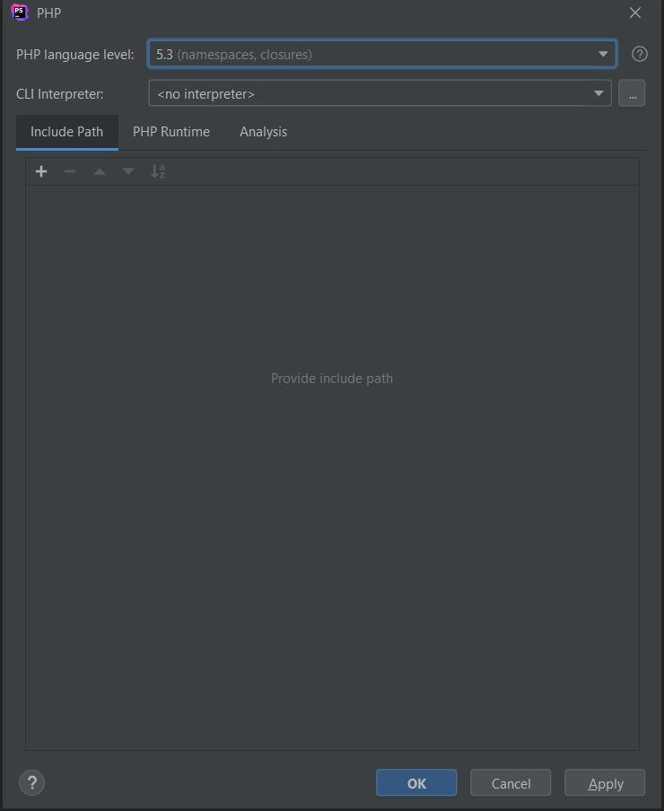
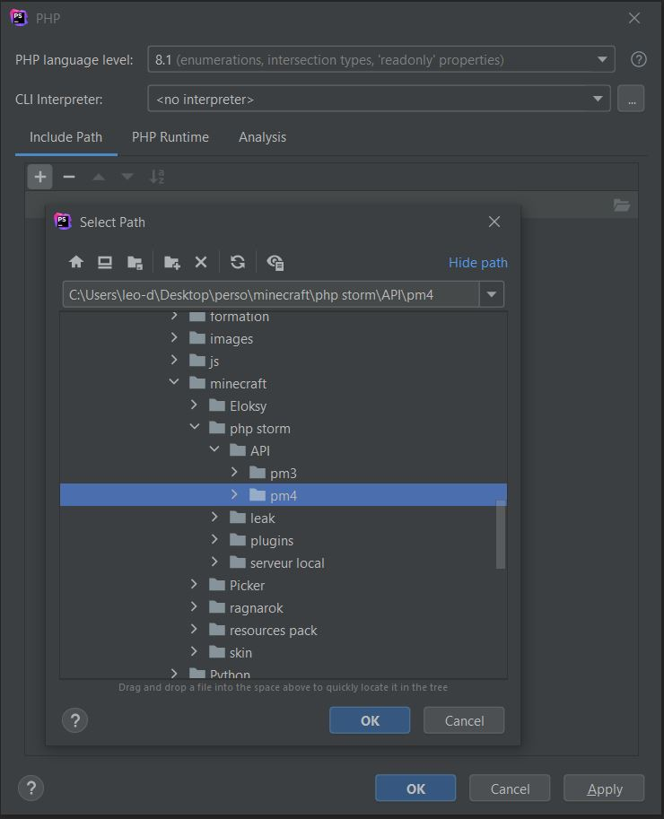
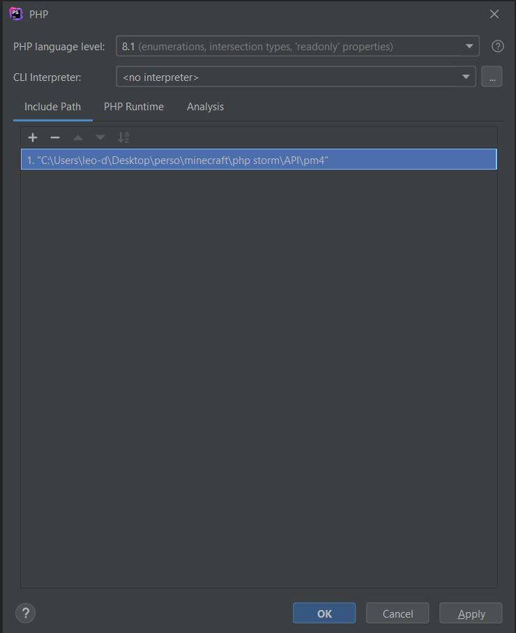

Comment insérer l'API de pocketmine à PhpStorm ?
Sachez d'abord que pour tout nouveau plugin, cette manipulation est obligatoire
1ère étape :
Dans un premier temps, appuyez sur External Libraries, puis clic droit qui vous permettra de configurer l'ajout de votre API dans votre PhpStorm.

2ème étape :
Dans un second temps, configurez la version de votre php à la dernière version.
3ème étape :
Dans un troisième temps, appuyez sur "+", qui vous permettra d'ajouter la librairie de pocketmine. Un nouvel onglet va s'ouvrir et à travers celui-ci, veuillez choisir le dossier comprenant votre API.
4ème étape :
Enfin, pour finir cette configuration, appuyez simplement sur le "apply" puis sur le "ok". Votre dossier pour votre plugin est maintenant fin prêt pour être transformer en plugin !
